Socialmediapakket · concept
Twee maanden Instagram en Facebook
Van maandag 16 november 2026 tot en met donderdag 14 januari 2027. Persoonlijk advies, weetjes, cadeau-inspiratie en de feestdagen aan tafel, zonder acties of prijzen. Onder elk beeld staat de caption.
- Feedposts
- 24
- Carrousels
- 6 38 slides
- Stories
- 24
- 12
Concept. Niets is gepubliceerd. De ondernemer keurt elke tekst goed vóór plaatsing.
Regels. NIX18 in elk beeld, geen openingstijden, prijzen, acties of bezorging, geen merknamen. Elke caption over drank sluit af met "Alleen voor 18+. Geniet, maar drink met mate."
Maand 1
16 november tot en met 15 december
Instagram feed 12
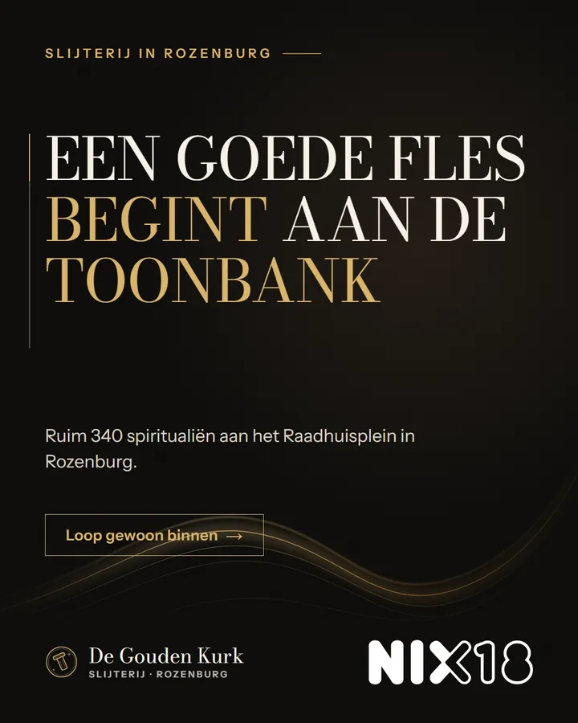
Een goede fles begint aan de toonbank
Herkenbaarheid: wie we zijn en waar we staan
Caption lezen
Een goede fles begint aan de toonbank. Sinds begin dit jaar staat De Gouden Kurk aan het Raadhuisplein in Rozenburg, in het pand waar eerder De Tuinwijzer zat. Op de planken staan ruim 340 spiritualiën: whisky en gin die je kent, jenever, wodka, likeuren en flessen die je niet in elke supermarkt vindt. Weet je nog niet wat je zoekt? Daar is de toonbank voor. Loop binnen, vertel wat je lekker vindt en we denken mee. Raadhuisplein 6, Rozenburg · 06 44999844
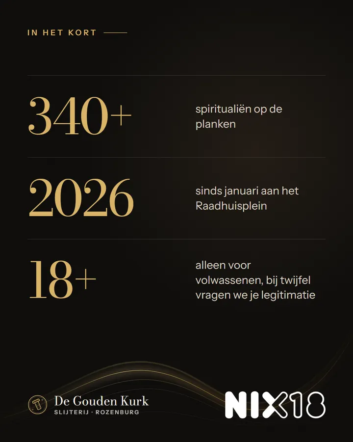
In het kort
Vertrouwen: de feiten op een rij
Caption lezen
Drie dingen over De Gouden Kurk, kort samengevat. Ruim 340 spiritualiën, van een vertrouwde blend tot een fles die je zelf nog moet ontdekken. Sinds januari aan het Raadhuisplein. En een winkel waar we, zoals het hoort, bij twijfel om je legitimatie vragen. Nieuwsgierig? Kom gewoon eens kijken. Raadhuisplein 6, Rozenburg
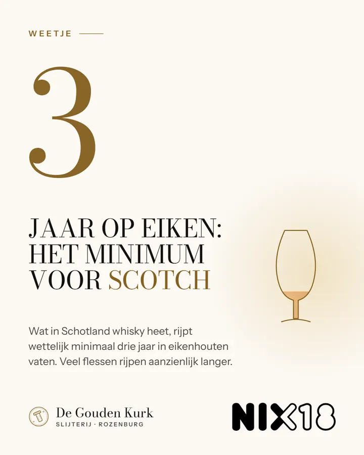
Jaar op eiken: het minimum voor Scotch
Autoriteit: een weetje dat blijft hangen
Caption lezen
Een kleine ezelsbrug voor bij de whiskyplank: drie jaar. Scotch whisky mag die naam alleen dragen als hij minstens drie jaar in eikenhouten vaten heeft gerijpt. Dat is het minimum. Veel flessen die je in de winkel ziet staan, hebben veel langer gelegen. Heb je een leeftijdsaanduiding op een etiket gezien en weet je niet wat die betekent? Vraag het gerust aan de toonbank. Alleen voor 18+. Geniet, maar drink met mate.
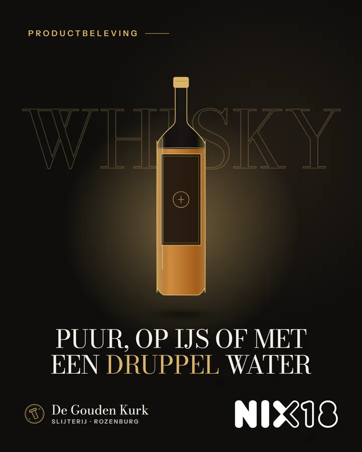
Puur, op ijs of met een druppel water
Productbeleving: whisky, rustig en persoonlijk
Caption lezen
Hoe drink je whisky? Zoals jij het lekker vindt. Puur om de smaak onverdund te leren kennen. Met een paar druppels water, die de aroma's kunnen openen. Of op ijs, wanneer je hem koeler en milder wilt. Een tulpvormig glas houdt de geur het best vast. Ben je net begonnen met whisky? Dan beginnen we graag met een vraag: wat drink je nu al graag? Alleen voor 18+. Geniet, maar drink met mate.
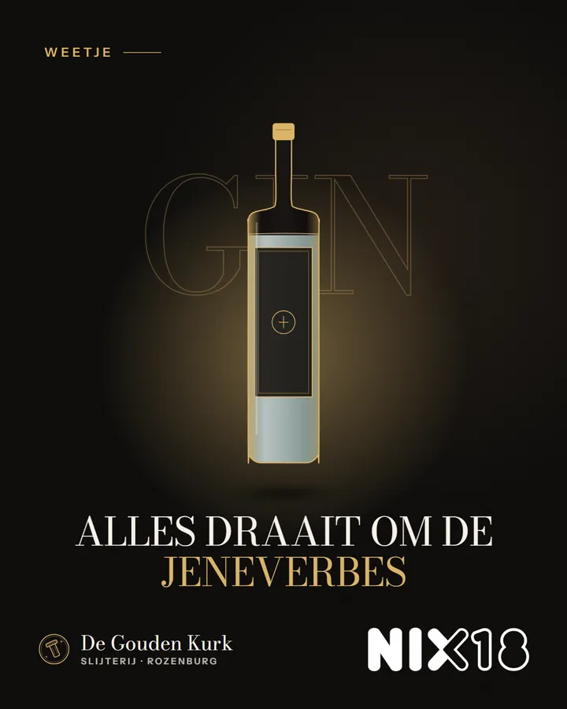
Alles draait om de jeneverbes
Educatie: wat gin gin maakt
Caption lezen
Waarom smaakt gin naar gin? Door de jeneverbes. Volgens de Europese regels moet de jeneverbes de overheersende smaak zijn. Wat er verder in zit, bepaalt het karakter: citrusschil, kruiden, bloemen of specerijen. Daarom smaakt elke gin net iets anders. Wil je er een vinden die bij jouw smaak past? Dan helpen we je graag verder. Alleen voor 18+. Geniet, maar drink met mate.
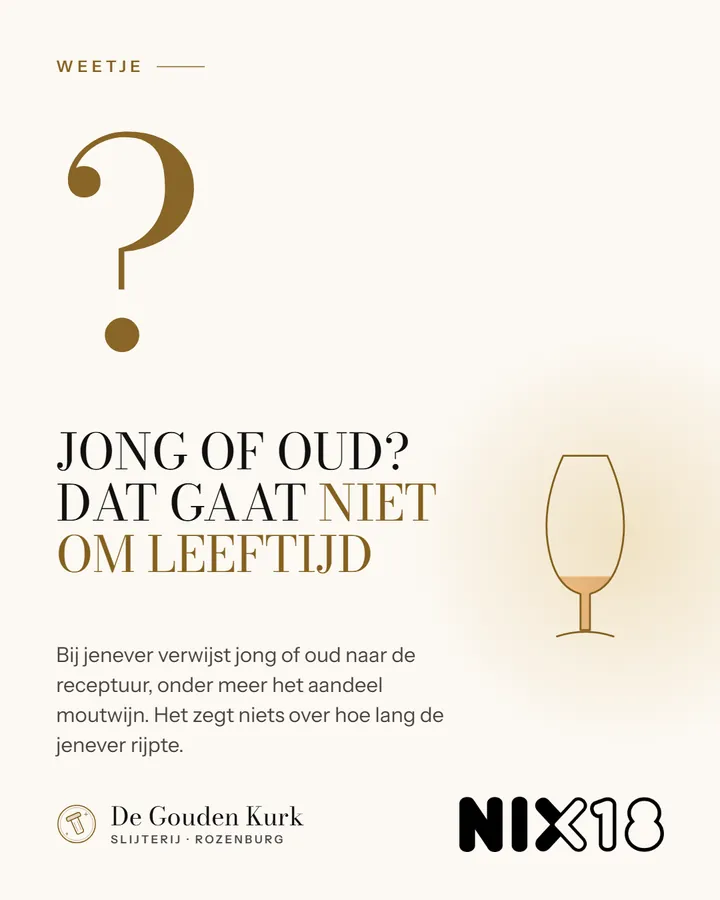
Jong of oud? Dat gaat niet om leeftijd
Streekbinding: jenever als Nederlands erfgoed
Caption lezen
Jenever is een Nederlandse klassieker, met een vreemde naam voor een verschil dat vaak verkeerd wordt begrepen. “Jonge” en “oude” jenever zeggen niets over hoe lang de jenever heeft gerijpt. Ze verwijzen naar de manier waarop hij is gemaakt, onder meer naar het aandeel moutwijn. Dat maakt oude jenever vaak vol en moutig, jonge jenever lichter. Proeven maakt het verschil duidelijk. Vraag ernaar aan de toonbank. Alleen voor 18+. Geniet, maar drink met mate.
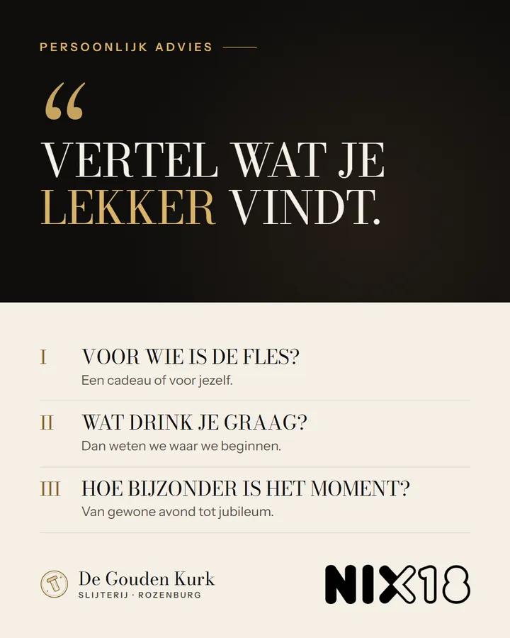
Vertel wat je lekker vindt.
Persoonlijk advies: de drempel om te vragen verlagen
Caption lezen
De beste fles vind je niet door te zoeken, maar door te praten. Wij beginnen met drie vragen: voor wie is de fles, wat drink je graag en hoe bijzonder is het moment? Meer is er niet nodig. De rest vind je samen aan de toonbank. Geen kennis nodig, geen verkeerde vragen. Raadhuisplein 6, Rozenburg · 06 44999844
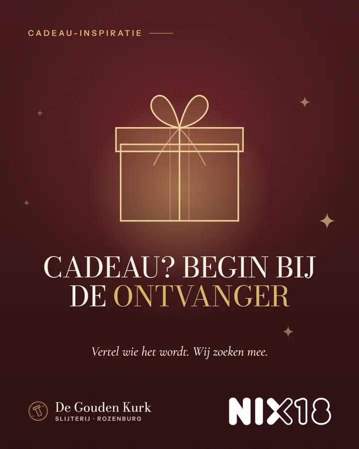
Cadeau? Begin bij de ontvanger
Cadeau-inspiratie: begin bij de ontvanger
Caption lezen
Een fles geven is persoonlijk. Daarom begint een goed cadeau bij de ontvanger, niet bij de fles. Wat drinkt hij of zij graag? Is het een kennismaking met iets nieuws, of een favoriet in een mooiere uitvoering? En hoe bijzonder is het moment? Met die drie antwoorden vinden we bijna altijd iets dat past. Kom langs of bel, dan zoeken we mee. Raadhuisplein 6, Rozenburg · 06 44999844
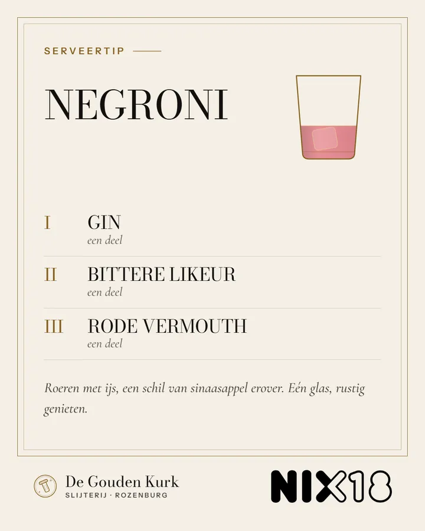
Negroni
Serveertip: een klassieker met drie gelijke delen
Caption lezen
Een van de makkelijkste klassiekers: de Negroni. Drie ingrediënten, in gelijke delen. Gin, bittere likeur en rode vermouth, geroerd met ijs en afgemaakt met een schil van sinaasappel. Het recept is simpel; het zit hem in de kwaliteit van de drie flessen die je kiest. Wil je weten welke bij elkaar passen? Vraag het aan de toonbank. Eén glas, een rustig tempo. Alleen voor 18+. Geniet, maar drink met mate.
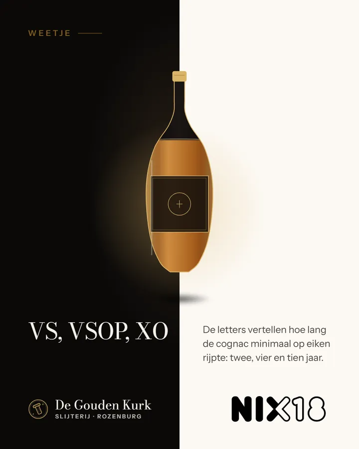
VS, VSOP, XO
Educatie: de letters op een cognacfles
Caption lezen
VS, VSOP, XO: drie afkortingen op een cognacfles en bijna niemand weet wat ze betekenen. Het zijn leeftijdsklassen. In een VS heeft de jongste cognac in de blend minstens twee jaar op eiken gerijpt, in een VSOP minstens vier en in een XO minstens tien. Hoe ouder, hoe meer de smaak meestal richting gedroogd fruit, hout en kruiden schuift. Waarom dan toch een VS kiezen? Voor in een cocktail, bijvoorbeeld. Vraag het gerust. Alleen voor 18+. Geniet, maar drink met mate.
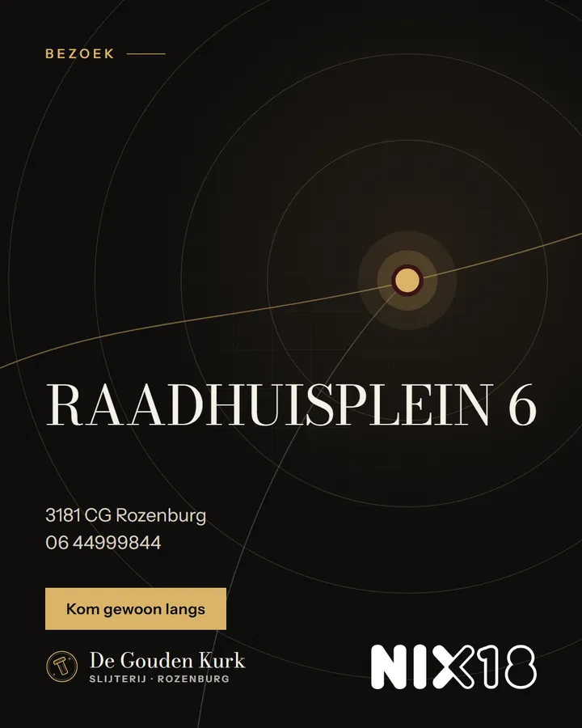
Raadhuisplein 6
Bezoek: de winkel vinden en binnenlopen
Caption lezen
Raadhuisplein 6, Rozenburg. Daar staan we. Kom langs om de planken te bekijken, een vraag te stellen of samen een fles te kiezen. Over de openingstijden: bel even, dan weet je zeker dat er iemand voor je klaarstaat. 06 44999844
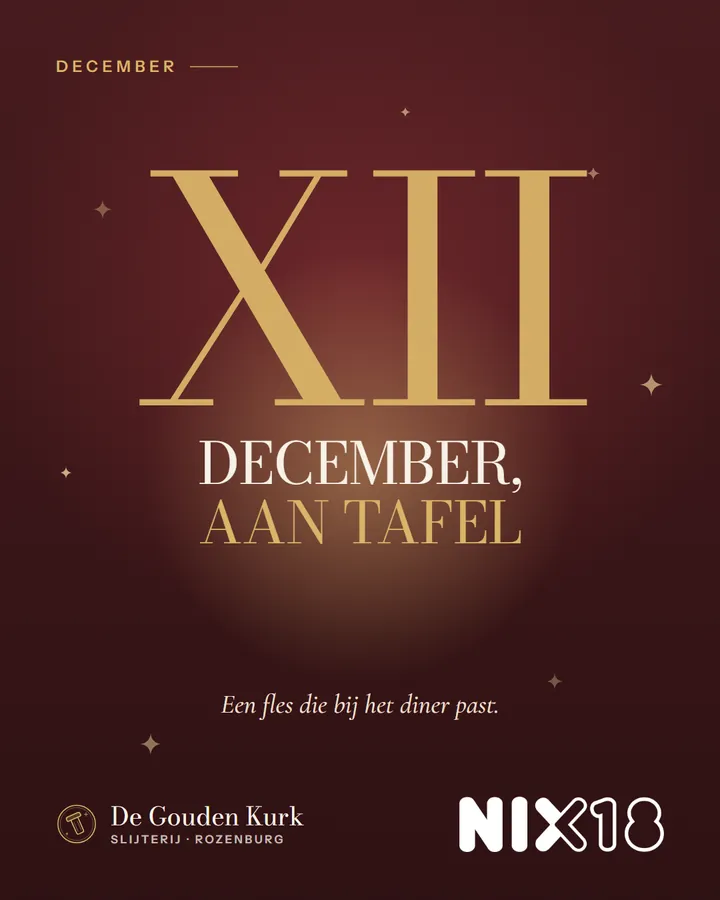
December, aan tafel
Seizoen: een fles die bij het diner past
Caption lezen
December betekent gezelligheid, en vaak een tafel vol mensen. Zoek je een aperitief om mee te beginnen, een digestief om mee af te sluiten of een fles voor het cadeau dat je nog moet kopen? Vertel wat je plan is, dan denken we mee. Eén glas voor elk moment, in een rustig tempo. Raadhuisplein 6, Rozenburg · 06 44999844 Alleen voor 18+. Geniet, maar drink met mate.
Carrousels 4
Whisky proeven in vier stappen
Educatie: whisky proeven voor beginners, bewaarbaar
Caption lezen
Whisky proeven in vier stappen: swipe voor een korte gids voor je eerste (of volgende) glas. Kijk, ruik, proef en voeg eventueel een druppel water toe. Er is geen haast en geen verkeerd antwoord. Bewaar dit bericht voor als je thuis de fles opent. Hulp bij het kiezen? We denken graag mee. Alleen voor 18+. Geniet, maar drink met mate.
Zes soorten, kort uitgelegd
Educatie: zes soorten in één oogopslag
Caption lezen
Zes soorten sterke drank, kort uitgelegd. Swipe voor de basis, met bij elk een serveertip. Whisky, gin, jenever, rum, likeur en cognac: elk met een eigen oorsprong en een eigen manier van drinken. Geen kennis nodig, alleen nieuwsgierigheid. Mis je er een? Vraag het gerust aan de toonbank. Alleen voor 18+. Geniet, maar drink met mate.
Het cadeau-kompas
Cadeau-inspiratie: vier vragen voor het juiste cadeau
Caption lezen
Het cadeau-kompas: vier vragen waarmee je sneller bij de juiste fles uitkomt. Voor wie is het? Wat drinkt hij of zij graag? Iets nieuws of de favoriet? En hoe bijzonder is het moment? Je hoeft het antwoord niet precies te weten: aan de toonbank denken we met je mee. Bewaar dit bericht voor de volgende keer dat je een cadeau zoekt. Raadhuisplein 6, Rozenburg · 06 44999844 Alleen voor 18+. Geniet, maar drink met mate.
Bewaren en serveren: vier tips
Persoonlijk advies: praktische bewaar- en serveertips
Caption lezen
Vier tips om een fles langer lekker te houden én beter te serveren. Rechtop bewaren, koel en donker, het juiste glas en vermouth in de koelkast. Kleine dingen met een groot verschil. Bewaar dit bericht voor de volgende keer dat je een fles opent. Nog een vraag? Loop binnen aan het Raadhuisplein. Alleen voor 18+. Geniet, maar drink met mate.
Stories 12
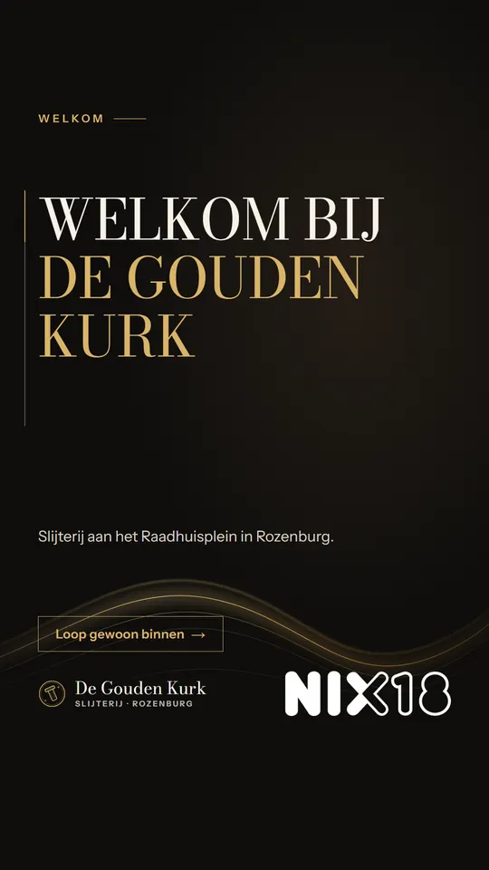
Welkom bij De Gouden Kurk
Welkom: nieuwe volgers
Sticker en instructie
Zet bovenaan een locatiesticker (Raadhuisplein, Rozenburg).
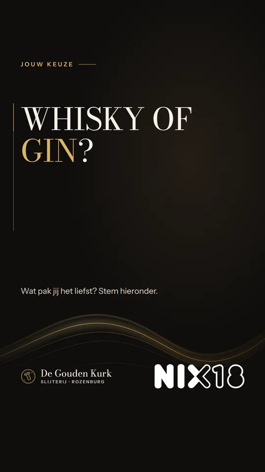
Whisky of gin?
Betrokkenheid: wat drinken onze volgers?
Sticker en instructie
Peilingsticker (Whisky / Gin) in het lege vlak onder de tekst. Alleen reageren op accounts die zichtbaar 18+ zijn (RvA art. 23 lid 5).
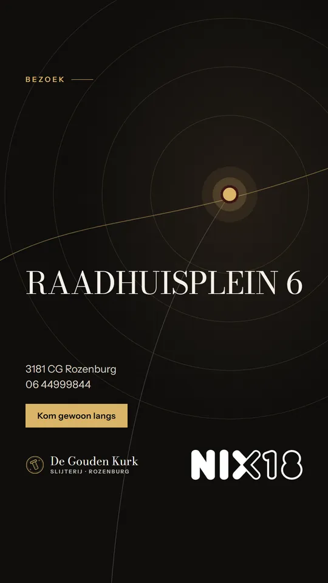
Raadhuisplein 6
Bezoek: de winkel vinden
Sticker en instructie
Locatiesticker erbij. Geen openingstijden vermelden zolang ze niet bevestigd zijn.
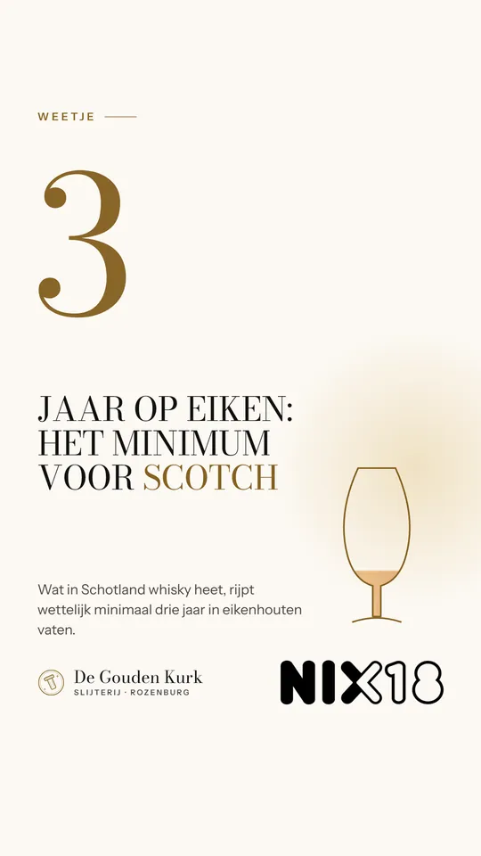
Jaar op eiken: het minimum voor Scotch
Educatie: Scotch minimaal drie jaar
Sticker en instructie
Voeg een quizsticker toe op de dag erna met drie antwoorden (1, 3 of 5 jaar).
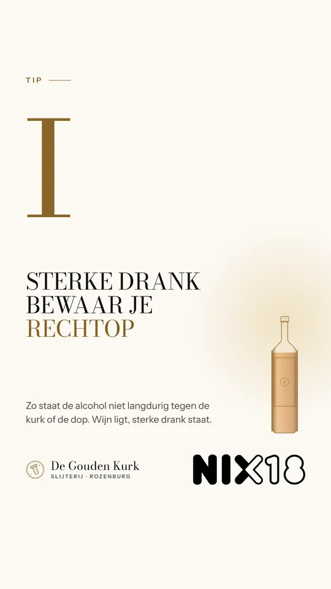
Sterke drank bewaar je rechtop
Persoonlijk advies: bewaren
Sticker en instructie
Verwijs met een linksticker naar de carrousel over bewaren en serveren.
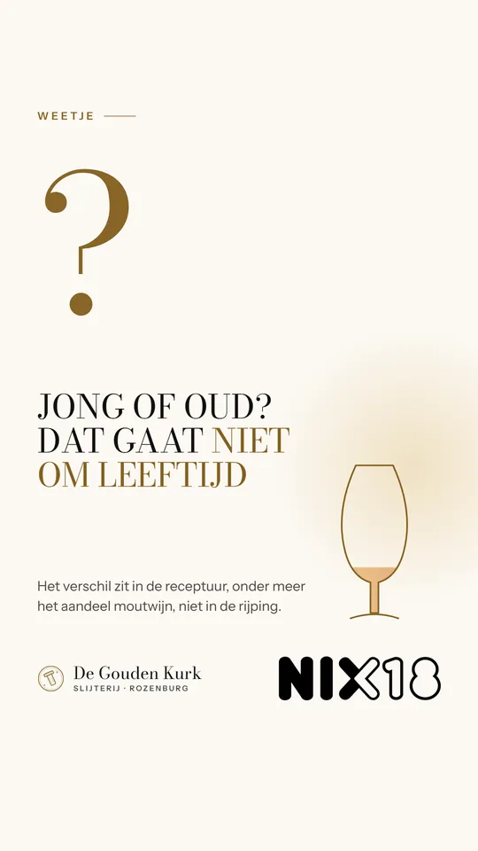
Jong of oud? Dat gaat niet om leeftijd
Educatie: jonge en oude jenever
Sticker en instructie
Stuur door naar het feedbericht over jenever.
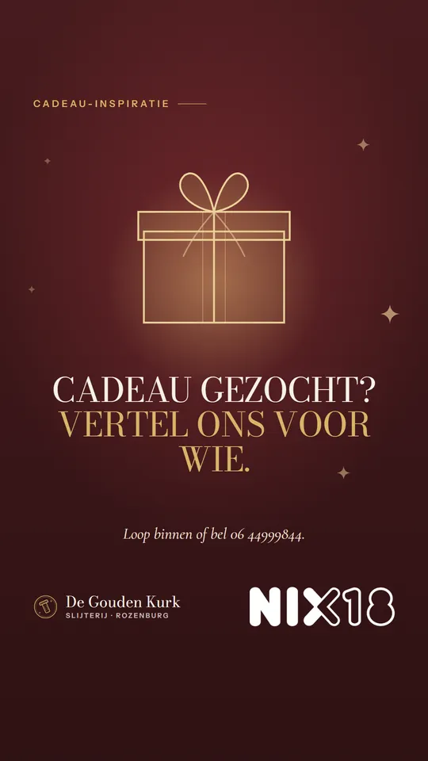
Cadeau gezocht? Vertel ons voor wie.
Cadeau: aanzet tot contact
Sticker en instructie
Gebruik de vraagsticker: Voor wie zoek je een cadeau? Antwoorden alleen beantwoorden na leeftijdscheck.
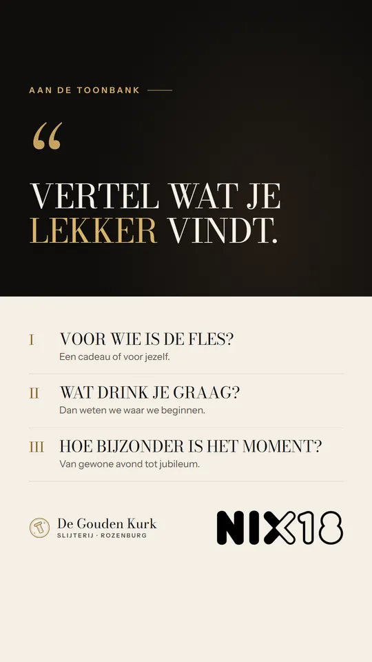
Vertel wat je lekker vindt.
Persoonlijk advies: drie vragen
Sticker en instructie
Vierde story in de reeks 'Aan de toonbank'.
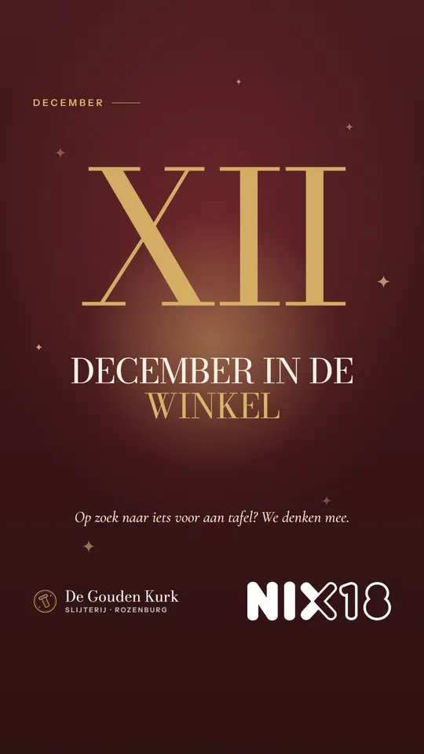
December in de winkel
Seizoen: december aankondigen
Sticker en instructie
Geen Sint of Kerstman afbeelden (RvA art. 10).
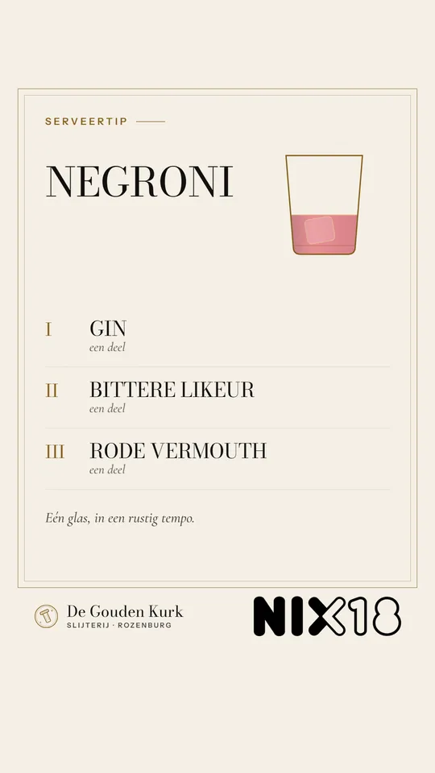
Negroni
Serveertip: Negroni in drie delen
Sticker en instructie
Bewaren als highlight 'Weetjes' of 'Advies'.
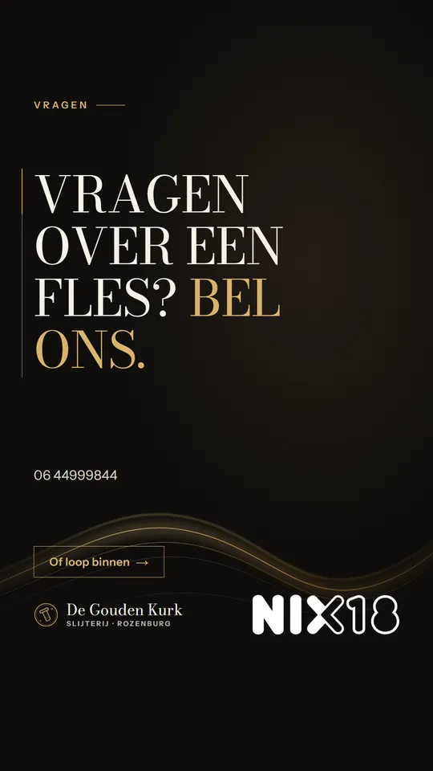
Vragen over een fles? Bel ons.
Contact: laagdrempelig bellen
Sticker en instructie
Bellen is de enige bevestigde contactvorm.
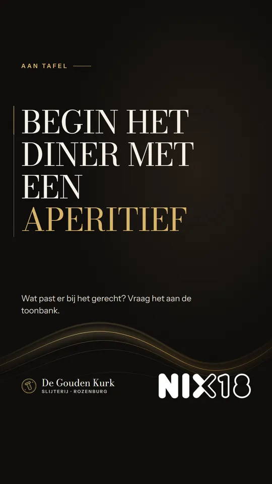
Begin het diner met een aperitief
Seizoen: het kerstdiner beginnen
Sticker en instructie
Geen alcohol in combinatie met autorijden of werk tonen (RvA art. 7 en 17).
Facebook 6
Een goede fles begint aan de toonbank
Bekendheid onder Rozenburgers
Caption lezen
Rozenburg, even voorstellen: De Gouden Kurk. Sinds begin dit jaar zitten we aan het Raadhuisplein, in het pand waar eerder De Tuinwijzer zat. Je vindt hier ruim 340 spiritualiën: bekende whisky en gin, jenever, wodka, likeuren en flessen die je niet in elke supermarkt tegenkomt. We vinden het belangrijk dat je hier iemand kunt aanspreken. Zoek je iets voor jezelf, een cadeau of een fles bij het eten? Loop binnen en vertel wat je lekker vindt. Raadhuisplein 6, Rozenburg · 06 44999844 Alleen voor 18+. Geniet, maar drink met mate.
Wat maakt gin gin?
Educatie: wat maakt gin gin
Caption lezen
Weetje voor in de week: gin is pas gin als de jeneverbes de overheersende smaak is. Wat er verder in zit, verschilt per fles: citrusschil, kruiden, bloemen of specerijen. Daarom proeft elke gin net anders, en daarom is het leuk om er een paar te vergelijken. We vertellen je er graag meer over aan de toonbank. Alleen voor 18+. Geniet, maar drink met mate.

Vertel wat je lekker vindt.
Persoonlijk advies: drie vragen
Caption lezen
Weet je niet welke fles je moet kiezen? Dat hoeft ook niet. Wij beginnen met drie vragen: voor wie is de fles, wat drink je graag en hoe bijzonder is het moment? Daarmee komen we meestal een heel eind. Je hoeft niets te weten van whisky, gin of jenever om hier binnen te lopen. Raadhuisplein 6, Rozenburg · 06 44999844 Alleen voor 18+. Geniet, maar drink met mate.

Cadeau? Begin bij de ontvanger
Cadeau-inspiratie
Caption lezen
Een fles geven is persoonlijk. Daarom beginnen we met vragen over de ontvanger, niet met de fles. Wat drinkt hij of zij graag? Iets nieuws of een favoriet? En hoe bijzonder is het moment? Loop binnen aan het Raadhuisplein, dan zoeken we samen iets dat past. Raadhuisplein 6, Rozenburg · 06 44999844 Alleen voor 18+. Geniet, maar drink met mate.
Raadhuisplein 6, Rozenburg
Bezoek: het adres en het telefoonnummer
Caption lezen
Zo vind je De Gouden Kurk: Raadhuisplein 6 in Rozenburg. Over de openingstijden: bel even, dan weet je zeker dat er iemand voor je klaarstaat. Heb je een vraag over een fles of een cadeau? Dat kan ook telefonisch. 06 44999844

December, aan tafel
Seizoen: december
Caption lezen
December komt eraan, en dus ook de vraag: welke fles hoort er op tafel? Zoek je een aperitief, een digestief of een cadeau voor iemand die alles al heeft? Loop binnen en vertel wat je plan is, dan denken we mee. Eén glas voor elk moment, in een rustig tempo. Raadhuisplein 6, Rozenburg · 06 44999844 Alleen voor 18+. Geniet, maar drink met mate.
Maand 2
16 december tot en met 14 januari
Instagram feed 12

Winterse smaken: rond en kruidig
Winteradvies: smaak kiezen bij het seizoen
Caption lezen
Als het buiten koud en donker is, zoeken veel mensen een andere smaak dan in de zomer. Denk aan rond en zacht, zoals een cognac. Aan kruidig, zoals een rum die op hout heeft gerijpt. Of aan rokerig, zoals sommige whisky's uit Schotland. Weet je nog niet welke kant je op wilt? Vertel wat je in de zomer lekker vond, dan zoeken we samen de wintervariant. Raadhuisplein 6, Rozenburg · 06 44999844 Alleen voor 18+. Geniet, maar drink met mate.

Voor wie alles al heeft
Cadeau-inspiratie: voor wie alles al heeft
Caption lezen
Het lastigste cadeau van het jaar: voor iemand die alles al heeft. Onze tip: begin bij wat hij of zij al graag drinkt, en zoek iets nieuws in dezelfde hoek. Drinkt je vader altijd dezelfde whisky? Dan is een whisky uit een andere regio een verrassing die toch klopt. Houdt je collega van gin? Er is altijd een gin met een ander karakter. Loop binnen of bel, dan denken we mee. Raadhuisplein 6, Rozenburg · 06 44999844 Alleen voor 18+. Geniet, maar drink met mate.
Aan tafel
Feestdagen aan tafel: één glas per moment
Caption lezen
Een feestelijk diner heeft drie momenten: ervoor, erbij en erna. Voor het eten iets fris of licht bitter, als aperitief. Bij het eten wat bij het gerecht past. En na het eten een klein glas om rustig af te sluiten, zoals een cognac of een oude jenever. Eén glas per moment is genoeg, en zet water en iets zonder alcohol op tafel. Vertel aan de toonbank wat er op het menu staat, dan denken we mee. Alleen voor 18+. Geniet, maar drink met mate.
De kleur van rum zegt niet alles
Weetje: waar de kleur van rum vandaan komt
Caption lezen
Wit, goud of donker: rum kent veel kleuren. Maar de kleur vertelt niet het hele verhaal. Donkere rum krijgt zijn kleur van het hout waarin hij rijpt, en soms wordt er karamel toegevoegd voor een gelijke kleur. Witte rum heeft soms ook op hout gelegen, maar wordt daarna vaak gefilterd. Een donkere rum is dus niet altijd ouder dan een lichte. Wil je weten wat er in een fles zit? Vraag het gerust. Alleen voor 18+. Geniet, maar drink met mate.

Fijne feestdagen
Seizoen: een rustige wens voor de feestdagen
Caption lezen
Fijne feestdagen van iedereen bij De Gouden Kurk. Dit was ons eerste jaar aan het Raadhuisplein. Dank aan iedereen die binnenliep, een vraag stelde of een cadeau kwam uitzoeken. We wensen je mooie dagen aan tafel, met de mensen om wie het draait. Rond de feestdagen kunnen de tijden anders zijn. Bel even voor je komt: 06 44999844. Alleen voor 18+. Geniet, maar drink met mate.
Ruby of tawny?
Weetje: het verschil tussen ruby en tawny port
Caption lezen
Port is een versterkte wijn uit Portugal, en de twee bekendste stijlen heten ruby en tawny. Ruby rijpt relatief kort, in grote vaten of tanks, en blijft daardoor dieprood en fruitig. Tawny rijpt langer in kleine houten vaten, krijgt contact met lucht en wordt amberkleurig, met tonen van noten en karamel. Een klein glas na het eten is genoeg. Benieuwd welke bij jou past? Vraag het aan de toonbank. Alleen voor 18+. Geniet, maar drink met mate.
Spreek vooraf af wie BOB is.
Matigheid: spreek vooraf af wie niet drinkt
Caption lezen
Oudejaarsavond is een avond om samen te zijn. Spreek vooraf af wie BOB is. Wie rijdt, drinkt niet. Zet water en iets zonder alcohol op tafel, en onthoud: niet iedereen hoeft mee te doen met een glas. Geen glas onder de 18, ook niet om middernacht. We wensen je een goede en veilige jaarwisseling. Alleen voor 18+. Geniet, maar drink met mate.
Een goed 2027
Nieuwjaar: dank en een rustige wens
Caption lezen
Een goed 2027 gewenst. Begin januari 2026 gingen de deuren aan het Raadhuisplein open. Dank aan iedereen die het afgelopen jaar binnenliep en vragen stelde. We zien je graag terug aan de toonbank. Raadhuisplein 6, Rozenburg · 06 44999844
Vijf regio's voor Scotch
Weetje: de vijf regio's van Scotch
Caption lezen
Op veel flessen Scotch staat waar de whisky vandaan komt. Er zijn vijf beschermde regio's. Highland, Lowland, Speyside, Islay en Campbeltown. Elke regio heeft een eigen naam, en vaak een eigen stijl: Islay staat bekend om rokerige whisky, Speyside om fruitige en zachte. Maar binnen elke regio zijn er uitzonderingen, en dat maakt proeven juist leuk. Wil je een regio leren kennen? Vraag het aan de toonbank. Alleen voor 18+. Geniet, maar drink met mate.
Een jaar
Vertrouwen: een jaar aan het Raadhuisplein
Caption lezen
Een jaar geleden gingen de deuren open aan het Raadhuisplein. In het pand waar eerder De Tuinwijzer zat, staan nu ruim 340 spiritualiën. En aan de toonbank staat iemand die graag met je meedenkt. Dank voor het vertrouwen in ons eerste jaar. Kom gerust eens kijken. Raadhuisplein 6, Rozenburg · 06 44999844
Gezoet, met smaak van fruit of kruiden
Weetje: wat een likeur een likeur maakt
Caption lezen
Wat maakt een likeur een likeur? Een likeur is een gezoete sterke drank. De smaak komt van fruit, kruiden, noten, bloemen of room. Daardoor is er veel variatie: van bitter en kruidig tot zacht en romig. Veel likeuren drink je in een klein glas na het eten, of in een cocktail. Welke past bij jou? Vertel wat je lekker vindt. Alleen voor 18+. Geniet, maar drink met mate.
Iets anders proberen?
Persoonlijk advies: een andere smaak ontdekken
Caption lezen
Wil je eens iets anders proberen dan je vaste fles? Dat hoeft geen gok te zijn. We beginnen bij wat je nu graag drinkt. Van daaruit zoeken we iets in dezelfde hoek, uit een andere regio of van een andere soort. En wil je eerst weten wat je koopt? Dan leggen we het uit. Raadhuisplein 6, Rozenburg · 06 44999844 Alleen voor 18+. Geniet, maar drink met mate.
Carrousels 2
Aan tafel in vier stappen
Feestdagen aan tafel: één glas per moment, bewaarbaar
Caption lezen
Aan tafel in vier stappen: swipe voor een rustige gids voor het feestdiner. Iets fris om te beginnen, wat bij het eten past, een klein glas om af te sluiten, en water en iets zonder alcohol voor iedereen. Wijn voor bij het eten vind je naast de deur in de supermarkt; voor wat ervoor en erna komt, denken wij graag mee. Bewaar dit bericht voor als je het menu maakt. Alleen voor 18+. Geniet, maar drink met mate.
Een etiket lezen in vier stappen
Educatie: een etiket lezen in vier stappen, bewaarbaar
Caption lezen
Een etiket lezen in vier stappen: swipe en je weet wat er in de fles zit. De soort, de inhoud en het alcoholpercentage, een leeftijd als die er staat, en de herkomst. Met die vier weet je al veel, nog voor je de fles opent. Bewaar dit bericht voor je volgende bezoek. Nog een vraag over een etiket? Vraag het aan de toonbank. Alleen voor 18+. Geniet, maar drink met mate.
Stories 12
Rond of rokerig?
Betrokkenheid: welke wintersmaak?
Sticker en instructie
Peilingsticker (Rond / Rokerig) in het lege vlak onder de tekst. Alleen reageren op accounts die zichtbaar 18+ zijn.
Voor wie alles al heeft
Cadeau: voor wie alles al heeft
Sticker en instructie
Vraagsticker: Voor wie zoek je nog een cadeau? Verwijs naar F14.
Aan tafel in vier stappen
Seizoen: verwijzen naar de carrousel aan tafel
Sticker en instructie
Linksticker naar carrousel C5. Geen proostende groepen afbeelden.
De kleur van rum zegt niet alles
Educatie: de kleur van rum
Sticker en instructie
Stuur door naar F16.
Raadhuisplein 6
Bezoek: bellen voor de tijden rond de feestdagen
Sticker en instructie
Geen openingstijden noemen zolang de ondernemer ze niet heeft bevestigd. Locatiesticker erbij.
Fijne feestdagen
Seizoen: wens voor de feestdagen
Sticker en instructie
Geen Kerstman, rendieren of kinderlijke figuren (RvA art. 10).
Ruby of tawny?
Educatie: ruby en tawny port
Sticker en instructie
Stuur door naar F18. Quizsticker kan: welke rijpt langer?

Wie rijdt, drinkt niet.
Matigheid: BOB bij oud en nieuw
Sticker en instructie
Geen drank, auto of verkeer in hetzelfde beeld (RvA art. 7). Dit is een matigheidsboodschap; laat de jurist meekijken (open punt 9).
Een goed 2027
Nieuwjaar: een rustige wens
Sticker en instructie
Geen beelden van proosten of vuurwerk met drank.
Vijf regio's voor Scotch
Educatie: vijf regio's van Scotch
Sticker en instructie
Quizsticker op de dag erna: welke regio staat bekend om rokerige whisky? (Islay)
Een jaar
Vertrouwen: een jaar aan het Raadhuisplein
Sticker en instructie
Stuur door naar F22.
Een etiket dat je niet snapt?
Persoonlijk advies: een foto van een etiket meenemen
Sticker en instructie
Linksticker naar carrousel C6.
Facebook 6
Winterse smaken: rond en kruidig
Winteradvies voor Rozenburgers
Caption lezen
In de winter zoeken veel mensen een andere smaak dan in de zomer: ronder, kruidiger of juist rokerig. Denk aan een cognac, een rum die op hout heeft gerijpt of een whisky uit Schotland. Weet je niet waar je moet beginnen? Vertel aan de toonbank wat je in de zomer lekker vond, dan zoeken we samen de wintervariant. Raadhuisplein 6, Rozenburg · 06 44999844 Alleen voor 18+. Geniet, maar drink met mate.
Voor wie alles al heeft
Cadeau-inspiratie: voor wie alles al heeft
Caption lezen
Nog een cadeau nodig voor iemand die alles al heeft? Begin bij wat hij of zij graag drinkt en zoek iets nieuws in dezelfde hoek: een whisky uit een andere regio, een gin met een ander karakter of een jenever van een andere stoker. Loop binnen aan het Raadhuisplein, dan zoeken we samen. Raadhuisplein 6, Rozenburg · 06 44999844 Alleen voor 18+. Geniet, maar drink met mate.
Fijne feestdagen
Seizoen: wens voor de feestdagen
Caption lezen
Fijne feestdagen, Rozenburg. Dit was ons eerste jaar aan het Raadhuisplein. Dank aan iedereen die binnenliep, een vraag stelde of samen met ons een cadeau uitzocht. We wensen je mooie dagen met de mensen om wie het draait. Rond de feestdagen kunnen de tijden anders zijn: bel even voor je komt, 06 44999844. Alleen voor 18+. Geniet, maar drink met mate.
Spreek vooraf af wie BOB is
Matigheid: BOB bij oud en nieuw
Caption lezen
Oudejaarsavond vier je samen. Spreek vooraf af wie BOB is. Wie rijdt, drinkt niet. Zet water en iets zonder alcohol op tafel, en laat niemand een glas opdringen. Geen glas onder de 18, ook niet om middernacht. Een goede en veilige jaarwisseling gewenst. Alleen voor 18+. Geniet, maar drink met mate.
Een goed 2027
Nieuwjaar: dank en een wens
Caption lezen
Een goed 2027, Rozenburg. Begin januari 2026 gingen we open aan het Raadhuisplein. Dank voor het vertrouwen, de vragen en de gesprekken aan de toonbank. We zien je graag terug. Raadhuisplein 6, Rozenburg · 06 44999844
Vijf regio's voor Scotch
Weetje: vijf regio's van Scotch
Caption lezen
Weetje voor in de week: Scotch kent vijf beschermde regio's. Highland, Lowland, Speyside, Islay en Campbeltown. Islay staat bekend om rokerige whisky, Speyside om fruitige en zachte. Maar elke regio heeft uitzonderingen, en dat maakt vergelijken leuk. We vertellen er graag meer over aan de toonbank. Alleen voor 18+. Geniet, maar drink met mate.
Doorlopend
Drie campagnes
Aan de toonbank
Weetjes van het Raadhuisplein
December aan tafel